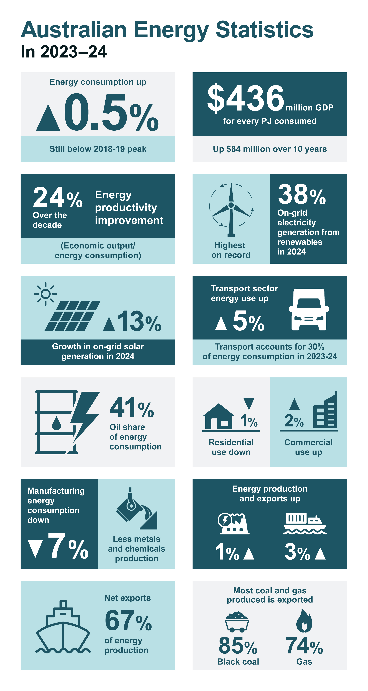
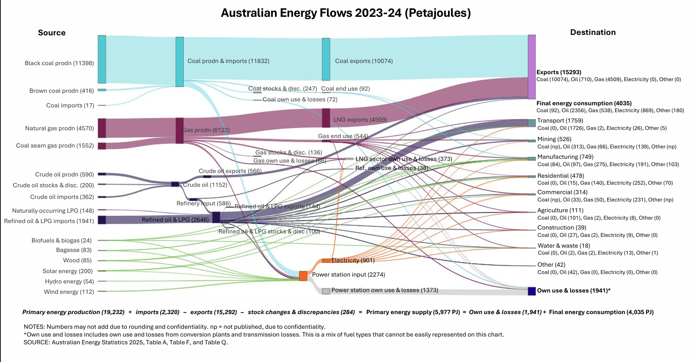

Welcome to PowerSmart
Explore how Australians can reduce energy bills with smarter appliance choices. Our platform highlights energy-efficient products and provides insights into national energy trends.
Televisions
Energy consumption of popular TV models in Australia:
- Samsung QLED – 120 kWh/year
- LG OLED – 95 kWh/year
- Sony Bravia – 110 kWh/year
Australian Energy Snapshot (2023–24)
Energy Flow Diagram
Australia's energy consumption in 2023–24 declined by 0.5%, remaining below the 2018–19 peak. Transport accounted for 30% of total energy use, with a 5% increase from the previous year. Manufacturing and residential sectors saw reductions of 5% and 1% respectively.
Renewable energy continues to grow, with on-grid solar generation up 13% and renewables contributing 38% of total electricity generation. Energy productivity improved by 24%, reflecting greater economic output per unit of energy consumed.
The Sankey diagram above illustrates the flow of energy from sources like coal, gas, oil, and renewables through transformation processes and into final consumption sectors such as transport, industry, and residential use. In 2023–24, Australia produced 19,252 PJ of primary energy, with 67% exported—most of it coal and gas.
About Us
We help Australians make informed decisions about appliance energy use. Our mission is to promote sustainability and reduce household energy consumption through education and data-driven insights.